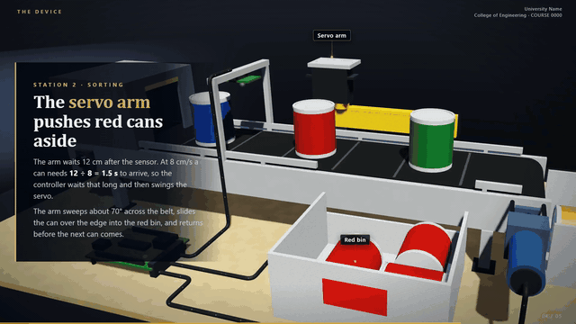
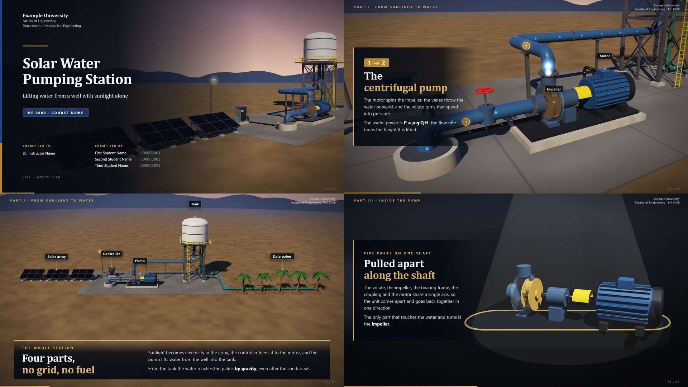

A 3D presentation in one HTML file
One 3D world stands behind every slide. Each slide is a camera on it, and "next" is a flight to the next part. The two decks below were built with the skill; each is a single file of about 112 KB with its own engine inside.
مهارةٌ لـ Claude Code تبني عرضاً ثلاثيّ الأبعاد في ملفّ HTML واحد: عالَمٌ واحد خلف الشرائح، وكلّ شريحةٍ كاميرا عليه.

Colour-sorting conveyor
Five slides. Cans travel on the belt, and a servo arm pushes the red ones, which tip over the edge and fall into their bin.
Open the deck
Solar water-pumping station
Ten slides, two scenes. A site at dusk where you follow the energy and then the water, and a pump pulled apart along its shaft.
Open the deckIn a deck: → and ← move between slides (or click the right and left of the screen), F goes full screen. It needs WebGL and reads best on a computer, or on a phone held sideways.